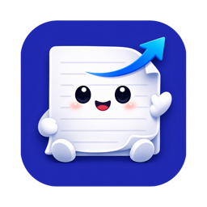
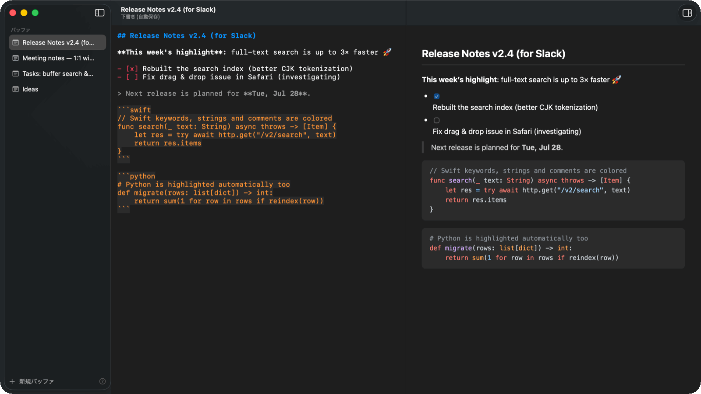

Paste. Start fresh.
Summon Editan with ⌥ ⌘ E and paste with ⌘ V. The text takes on the editor’s style. Scratch drafts save automatically.
PASTE →
editan.Paste text from a web page, an email, or another app.
Editan brings it in as plain text, ready to edit in one consistent style.

Claude Code / Slack / Gmail / Notion / anything else.
01 / PLAIN TEXT ON THE WAY IN
No font or text-color cleanup before you can begin. A normal ⌘V brings pasted text into Editan as plain text, ready to work with.
COPIED FROM ANOTHER APP
Small improvements. Big difference.
Polish the details
Share with the team
PASTED INTO EDITAN ⌘ V
Next release Small improvements. Big difference. Polish the details Share with the team
An illustration of formatting removal. Markdown syntax highlighting is Editan’s own presentation.
02 / PASTE, REFINE, COPY
Text arrives from all over and leaves for somewhere new.
Editan gives you a plain-text workspace in between.
Summon Editan with ⌥ ⌘ E and paste with ⌘ V. The text takes on the editor’s style. Scratch drafts save automatically.
PASTE →Preview your Markdown. Format it. Or ask Claude to proofread, summarize, or change the tone. You review the result before replacing anything.
REFINE →Copy plain text for a prompt, Slack-style text for a message, rich text for email, or create a Notion page.
COPY & GO ↗03 / THE RIGHT KIND OF COPY
Formatting should travel well. Choose what the destination needs, with a shortcut for each.
⌘ C Always plain text.
No surprise fonts riding along.
Try the format examples. This is a guided illustration, not a browser version of Editan.
# Ready to ship **Small improvements. Big difference.** - Polish the details - Share with the team
Small improvements. Big difference.
Markdown stays Markdown. The clipboard gets plain text.
04 / SMALL APP. CONSIDERED DETAILS.
SwiftUI and AppKit. A menu bar companion. Open Markdown and text files from Finder. Work with familiar keyboard shortcuts.
Japanese IME-aware editing, without smart quotes or autocorrect. Lists and quotes continue on a new line. Reusable snippets handle the repetitive parts.
A split Markdown preview, bundled code highlighting, and a copy button on each code block. Editing and preview work offline.
Polite Japanese, a casual tone, proofreading, summaries, or your own prompt. Optional Claude Code integration works on a selection or the whole draft.
05 / MAKE YOURSELF AT HOME
Editan is an early-stage, MIT-licensed project.
Build it, use it, and help shape what comes next.
Requires macOS 14+, full Xcode 26+, and Homebrew. Source builds are ad-hoc signed; there is no notarized download or App Store release yet.
Help make Editan better ↗brew install xcodegen
git clone https://github.com/kohey18/editan.git
cd editan
./Scripts/install.shInstalls to /Applications/Editan.app
A FEW MORE THINGS
Pasting imports the text supplied by the source clipboard as plain text. It does not convert a web page’s visual formatting or layout into Markdown syntax. Existing Markdown characters remain editable as text.
No. Drafting, Markdown preview, formatting, snippets, and clipboard features work without Claude. Only AI transforms require a recent Claude Code CLI with working authentication. Usage limits and billing follow your CLI configuration.
No. It puts Slack-style text on your clipboard for you to paste. Rich-text copy works the same way. Notion export is different: it creates a page using the integration and parent page you configure in Settings.
Scratch drafts are plain Markdown under ~/Library/Application Support/Editan/Buffers/. They are not encrypted by Editan. Notion tokens use macOS Keychain. When a legacy token is migrated successfully, its old preference is removed.
Not currently. Editan is a native macOS app, and its interface currently uses Japanese labels. This website is available in English and Japanese.